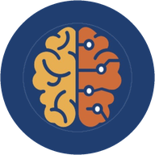

Systems
101,010
Requests/sec on reads
Redis Clone
A Redis-compatible server built from raw TCP sockets, with the RESP2 wire protocol written by hand.
CS Junior, Morgan State University · Clara Adams Honors College · Baltimore, MD
I like knowing why things work, not just that they do. That's pulled me into ML research at Morgan State's HAX Lab and into building systems from the ground up. When I'm not at a keyboard, I'm probably at a table tennis table.
Systems
101,010
Requests/sec on reads
A Redis-compatible server built from raw TCP sockets, with the RESP2 wire protocol written by hand.
Research
87.86%
Drift-classification accuracy
A three-branch CNN and Transformer pipeline for early cardiovascular disease prediction across ECG and PPG signals.
Full stack
18
Accommodation categories
An AI coaching platform for K-12 students with IEPs, built solo on a four-stage multi-model workflow.
I'm a Computer Science junior and Clara Adams Honors College Scholar at Morgan State University. I grew up in Nepal, and I now live and study in Baltimore.
I got into computer science because I wanted to understand how things actually work, and that curiosity still drives most of what I do. I enjoy taking something complicated, figuring out how it fits together, and building something useful with it.
Outside of class and code, you'll usually find me at a ping pong table, or watching soccer with friends. Table tennis is the sport I play most competitively, and on the soccer side I'm an FC Barcelona supporter. Most days, there's hip-hop playing in the background while I work.

An AI coaching platform for K-12 students with IEPs, built solo on a four-stage multi-model workflow.
A Redis-compatible server built from raw TCP sockets, benchmarked at 101,010 requests per second.
A wellness tracker with real-time mood logging and AI-generated weekly reports.
A PyPI command-line tool that turns plain-English tasks into fully engineered prompts.
A scheduled Python agent that emails me four developer briefs every morning, with no server behind it.
A local Mac tool for sorting a photo library with hand swipes at the webcam. Nothing is deleted until you confirm.
Fall 2024 – Present
The full picture, on one page.
© 2026 Rochak Ghimire